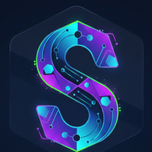

إضافاتك الحقيقية في المتجر. اختر ما يناسب عملك وثبّته بنقرة، فيظهر هنا على سطح المكتب.
العيسائي برو يتطلب تفعيل JavaScript. هو سطح مكتب تطبيقات يعمل دون اتصال، ويضم ملاحظات ومتجر إضافات ومزامنة مشفّرة مع GitHub.